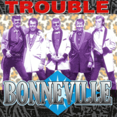

Bonneville - Trouble (Album, 1999)
01 - Trouble (1:48)
02 - Sip Sip Sippin' (4:11)
03 - Jumpin' Jumpin' (2:52)
04 - Teddy Boys (2:54)
05 - Rockabilly Beat (2:37)
06 - Miffs Riff (3:26)
07 - What Do You Want? (Rock 'n' Roll!) (2:35)
08 - Bonneville Bop (2:17)
09 - Ain't No Holdin' Back (2:41)
10 - What You Fancy (3:13)
11 - Pipeline (2:20)
12 - Never Can Tell (2:33)
13 - Rockabilly Baby (2:19)
14 - Dog House Rock (2:44)
15 - All Night (2:31)
© Nervous Records :: [NERCD097]
Notes
United Kingdom, England, Gloucester.
Dido Vance - Vocals
Ian Smith - Lead guitar, Vocals
Brian Fry - Bass, Vocals
Dave Watts - Drums
Mike Pettett - Lead guitar on tracks 01, 08, 14
All tracks written by (or credited to) Trull/Smith. Except for track 11 and track 13
Recorded at Fleetwood Studios by Howard Powel (in the early 1980's)
reference information: Discogs®
Review
080/366 (Project 366)
Classic way of teddy boys' rocking and rolling.